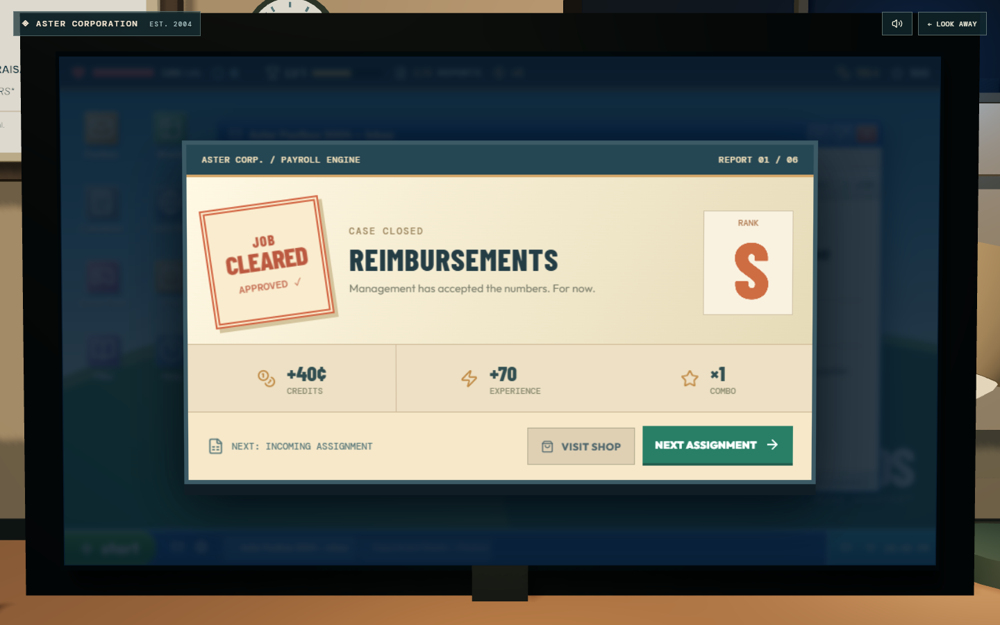
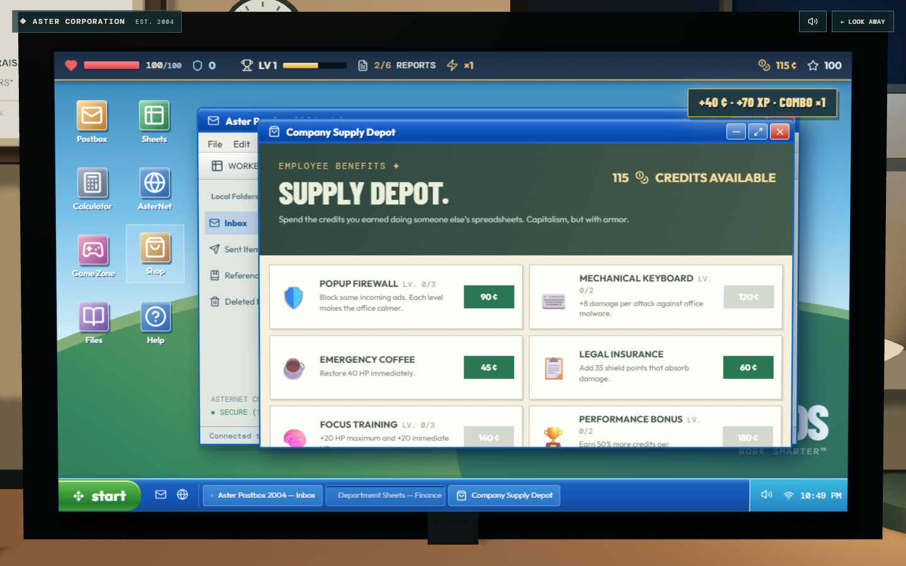
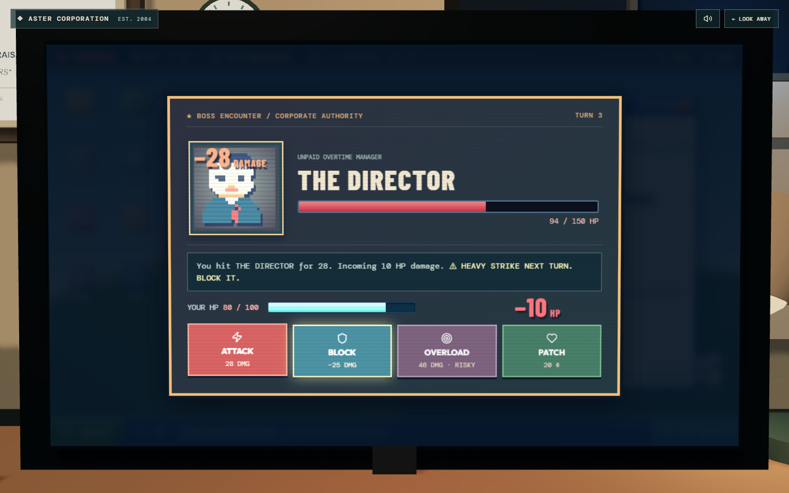
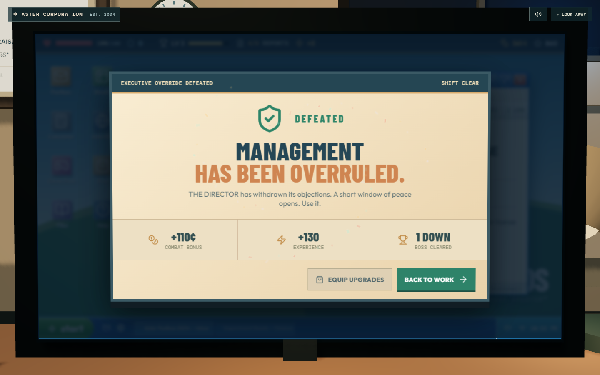
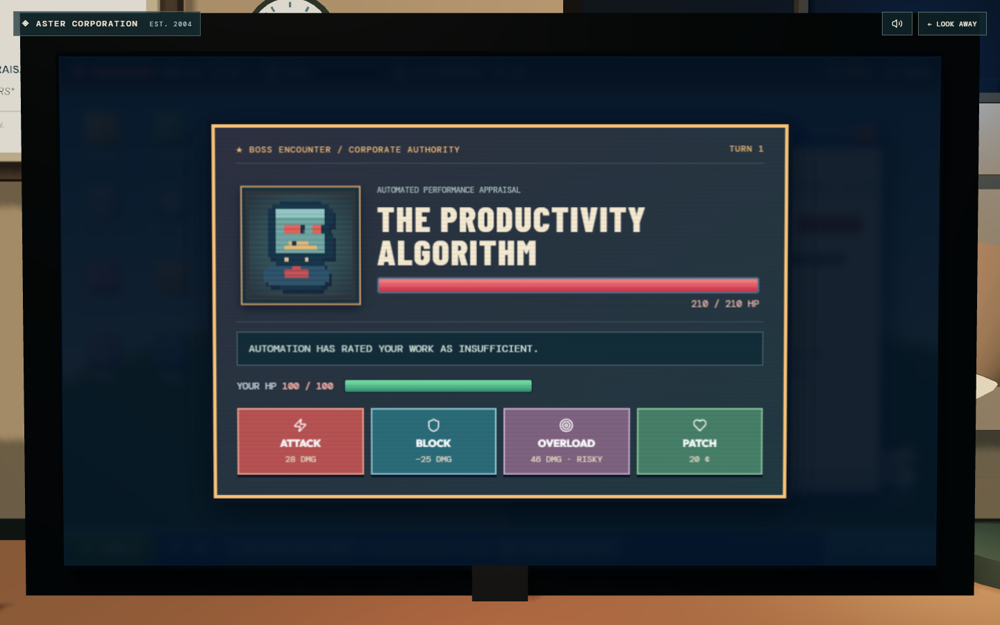
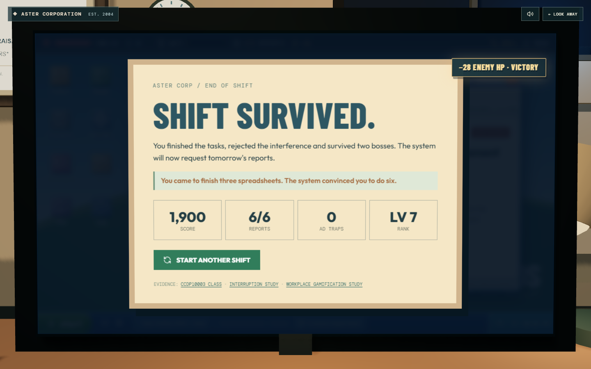

ASTER INTERACTIVE / VISUAL QA
OFFICE HOURS.
Real screenshots captured from the running game. These are evidence of the visual design, not simulated mockups. Sound and motion are experienced in the playable build.

The 3D office
Start from the physical office. No compulsory essay or tutorial.

First assignment
An urgent email provides the first playable objective.

Actual work
Editable spreadsheets, calculator and scoring.

Job cleared
A stamp, particles, counting XP and credit rewards.

Supply depot
Credits buy upgrades that affect subsequent encounters.

Boss telegraph
Hit reactions, damage numbers and clear block warnings.

Boss defeated
Animated score result and sound victory cue.

Final boss
The algorithm tests your survival.

Shift survived
End of the six-report campaign.